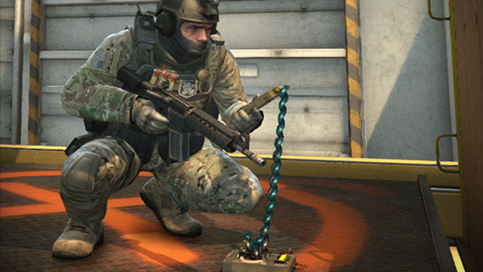

Game Play
There are many game modes in csgo:
| Mode | Description |
|---|---|
| Bomb Defusal | The Terriost side tries plant a bomb, which can only be planted at site a or b. A team can win by eliminating the other team but if the counter-terriosts fails to defuse a bomb, they lose. But if the bomb gets defused, then the terriosts win |
| Hostages | The objective is for the counter-terriosts to get two availible hostages and bring it back to the spawn point, if they do, they win. But if they get eliminated, they lose. |
| Arms Race | The ultimate goal in Arms Race is to score a kill with the Gold Knife. There is no time limit, buy menus are unavailable, money will not be rewarded for any reason, and weapons cannot be thrown away but will disappear as soon as the player dies. Instead, players spawn with the weapon on his or her current level as well as the knife. For every two kills on a particular level, the player will receive a new weapon by leveling up to the next level. The gold knife is the final weapon a player receives, and the first player to score a kill with the gold knife wins the game along with his or her team. |
| Demolition | Demolition mode is a hybrid of the Bomb Scenario mode and the Gun Game mod. The round time is 1 minute and 30 seconds. The round winning conditions for the two teams are: Counter-TerroristsRun down the round timer without the Terrorists ever planting the C4 Explosive, defuse the C4 after it has been planted, eliminate all Terrorists (not available after the C4 was planted). Terrorists:Plant the C4 explosive and run down its countdown without the Counter-Terrorists defusing it, eliminate all Counter-Terrorists |
| Wingman | It is like a Bomb Defusal Map but with two players instead of a full teams of five. |
| Flying Scoutsman | The gravity is lowered but the accuracy is highter, the only weapons allowed are the SSG and the knife |
| Danger Zone | It is a battle royale mode of CS:GO. Players have to find guns and can buy with the money that they get off of killing other players or finding it |
| Deathmatch | Players have an infinite amount of respawns with full armor, and come back within a few seconds of their death. After a player spawns, a distinctive spawning noise can be heard, and the player will be invulnerable for up to 6 seconds allowing the player to access a modified buy menu. Ammo reserves are infinite, and any weapon can be "purchased" regardless of cost except equipment such as grenades and the Defuse Kit. The loadout can be locked or random, depending on which the player chooses to use. Once the player begins moving or fires a weapon, invulnerability will wear off within a second, and the buy menu will no longer be accessible. Killing enemies or scoring assists will gain points instead of money or new weapons. It is also possible to dominate enemies in this game mode. |